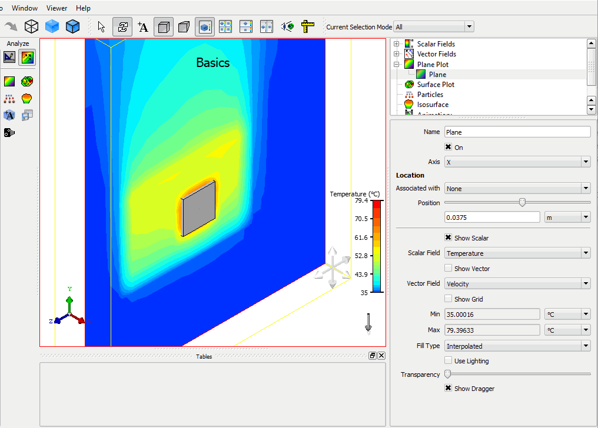
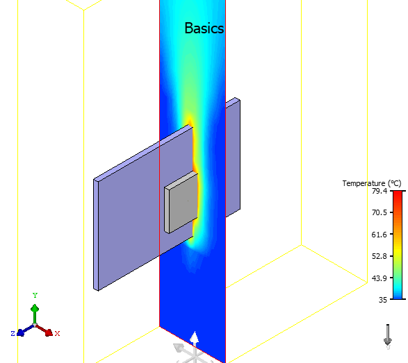

Use
the GDA to view plots of results superimposed over the model.
Procedure
- Click the Analyze icon and then press SHIFT+I
to change to an isometric view.
- In the
Results Tree, right-click the Plane Plot node and choose Create Plane Plot.
A new plot
(Plane) is added as a child of the Plane Plot node and the Temperature
scalar plot is displayed.
- Change
the plot position.
Change 0.035 m to 0.0375 m, see Figure 1.
Figure 1. Temperature Plane
Plot (Default X-Axis)
- With the new plane plot still
selected, change the Axis to Z.
The result is shown in Figure 2.
Figure 2. Z-Axis Plane Plot